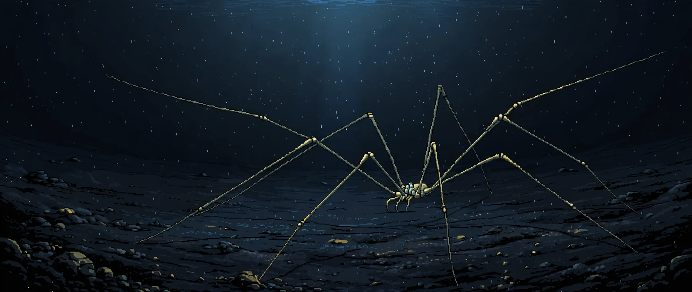

WEEK 07 · NOVEMBER 2, 2026
The cradle walks

FIG. 1 · A SEA SPIDER ON ABYSSAL MUD, CAPSULES AT THE TRUNK · JAPAN TRENCH · AN ARTIST'S READING, NOT A PHOTOGRAPH
In September 2023 the research vessel Hakuho-maru worked the Japan Trench, and two sea spiders came up in its samples. A female, on September 27, from 3,685 to 3,693 metres down. A male, two days later, from 3,890 to 3,893 metres. Both went into ethanol, then to Hokkaido University, where Shogo Sekiguchi and Keiichi Kakui examined them. On the female they found five small oval structures, attached by stalks. The structures were egg capsules. They were not hers.1
The carrier is wrong twice over. Sea spiders are the rare case of fathers doing the carrying: in mating, the eggs pass to the male, who holds them on a dedicated pair of appendages, the ovigers, until they hatch.3 Here the carrier is female, and the eggs belong to a different animal entirely, from a different phylum. Arthropod below. Flatworm above, in pieces too small to see while the animal lived.
Small is the operative word. One capsule measured 0.17 millimetres long and 0.09 wide, on a stalk 0.03 millimetres long, yellowish in ethanol, with a white mass inside that the authors mark, carefully, as embryo(s)? Five of them in a row would span less than a millimetre. They sat on the side of the second trunk segment, on the upper joints of two legs, and on the inner faces of the chelifore scapes, the small clawed appendages at the front of the animal.1
FIG. 2 · WHERE THE CAPSULES SAT: FEMALE, DORSAL VIEW, SCHEMATIC
Pick a site. Five capsules on the female, placed as the paper's figure 9 records them. The drawing is a schematic, not to scale: at true scale the capsules would be specks on the leg joints.
Positions and counts from the paper; see source 1.
The spider, at least, has a name. Ascorhynchus mariae, described by Turpaeva in 1971 from six specimens taken in the Kuril-Kamchatka Trench at 3,145 to 3,250 metres. The Japan Trench pair is only the third record of the species anywhere, the deepest, and the first in Japanese waters. The female's anatomy had never been described. So the paper does two jobs at once: it redescribes a spider science had met twice in fifty years, and it reports what the spider was carrying.12
What it was carrying has no name, and may be further from having one than a species. Sekiguchi and Kakui sequenced two capsules (the 18S sequence from the second was identical to the first) and placed the animal in the flatworm family Trigonostomidae, as sister to the genus Ptychopera. Then the distances: in the 18S gene, the capsule sits 5.7 to 6.5 percent away from the four Ptychopera species compared, while those species sit only 1.0 to 3.9 percent from each other. The authors' conclusion is measured and strange. The egg layer probably represents an undescribed genus. A genus, inferred from eggs, on the back of a spider, 3,700 metres down. No adult was collected. Without an adult there is nothing to describe, and nothing to name.1
The relatives make the depth harder to file away. Ptychopera species live from the shore zone down to at most 15 metres: salt marshes, brackish pools, mussel beds, seagrass. Six other trigonostomid genera the databases lack sequences for are all shore animals too, none deeper than a metre and a half. The lineage in the capsules is what you get when a shore family has a branch living nearly four kilometres under the Pacific, known so far only by what it leaves behind.1
Deep records of free-living flatworms are rare for a plain reason: the animals are soft, and sampling wrecks them. Before this paper, specimen records below 3,000 metres amounted to two species. A polyclad at 3,232 metres in the Escanaba Trough, and a triclad at 6,176 to 6,200 metres in the Kuril-Kamchatka Trench, itself known from capsules found on rocks (Kakui again, with Tsuyuki, in 2024). This one is the second deepest record of all. Notice the pattern in two of the three: at these depths, a flatworm is most likely to enter science as its eggs. The capsule is the part built to survive the trip up.14
- Known by its eggs. Taxonomy can put the animal on the tree, between named relatives, with percentages attached. It cannot name it. Naming waits on an adult, and the adult is a soft worm on an abyssal plain that has been sampled a handful of times. The record therefore holds a precise address for an animal with no name and no face: family certain, genus probable, species untouched.
- Hard ground that moves. Why a spider? The abyssal floor there is soft sediment, and hard surfaces to glue eggs to are scarce. A sea spider is a rigid body held up out of the mud, and it walks. That reading is an interpretation, not a result: nobody watched a flatworm lay these eggs, nobody measured a benefit to the eggs or a cost to the spider, and attachment is not parasitism until a cost is shown. Other animals have used sea spiders as substrate before (ciliates, hydrozoans, bryozoans, molluscs, even a young crinoid). The flatworm is the first of its kind on the list, not the first passenger.12
- Two specimens is not a survey. The empty capsule-like structures, one on the female and two on the male, hint that the female was not a freak event. A hint is all they are. With a sample of two spiders there is no frequency to report, no preference to claim, no life cycle to draw. The paper says what two animals can support, and stops there. The stopping is part of the finding.
Inventory what actually exists in the record. Two gene sequences, 1,786 and 1,634 bases long. Five capsules, three of them detached for study, one lost during observation. Three empty husks. And a spider, redescribed appendage by appendage, because carrying the evidence made it worth describing properly at last.
Somewhere in the Japan Trench the parent is going about its life, unrecorded, in the dark, at a pressure that would end the conversation for most shore animals. Its young ride a passerby. That is the whole of what is known, and it is not a small thing: a lineage can be real, placed, and counted before anyone has seen it.
SOURCES
- Sekiguchi and Kakui, "Abyssal cradle: flatworm egg capsules on a deep-sea sea spider," Spixiana 49(1), October 2026: the specimens and depths, the capsule positions and measurements, the identical 18S sequences, the Trigonostomidae placement and genetic distances, the undescribed genus conclusion, the shore habitats of the relatives, and the two earlier flatworm records below 3,000 m.
- Japan.co.jp, October 24, 2026, on the Hokkaido University announcement of October 22: the voyage dates, the hard-surface reading of the spider as a nursery, the caution that no benefit or cost was measured, and the earlier records of other animals' eggs on sea spiders.
- Marine Biodiversity, 2023, on mating in giant sea spiders: paternal brood care in pycnogonids, the eggs transferred to the male and carried on the ovigers until hatching.
- Kakui and Tsuyuki, Biology Letters, 2024, "Flatworm cocoons in the abyss": capsules on rocks at 6,176 to 6,200 m in the Kuril-Kamchatka Trench, three to seven individuals per capsule, and the shallow-to-deep reading of that lineage.